HOLT NEWS — 화제의 연구와 뉴스를 쉽게 풀어 쓰는 간행물
오늘의 경제
그래프는 지난 1년 흐름
미국 공항 이륙 4시간 멈춰, 내 표는?
미국 연방항공청(FAA)이 현지 시각 11월 13일 오후 4시쯤 전국 공항의 이륙을 멈췄다가 4시간여 만인 8시 15분에 풀었어요. 여러 항로관제센터의 통신이 문제였다는 설명만 나왔고 정확한 원인은 조사 중이에요. 미국 교통부 규정상 결항이면 원인과 상관없이 산 값 전액을 환불받을 수 있어요.

마이크로소프트 24시간 먹통, 보상은 얼마?
마이크로소프트 365가 거의 24시간 멈췄어요. 회사 계정이라면 서비스 수준 약정, 곧 SLA에 따라 멈춘 서비스 요금의 25~50%를 다음 요금에서 깎아 받을 수 있지만, 멈춘 직원 수와 시간에 따라 구간이 갈려요. 기업 약정은 업무 손실을 물어 주지 않고, 개인 구독은 이 약정 대상이 아니에요. 직접 계약은 12월 31일까지 청구해야 해요.


부자 소득세는 이어 가고, 부유세는 거부
캘리포니아 유권자가 억만장자 재산에 한 번 5%를 매기는 발의안을 부결했어요. 같은 날 고소득자 소득세를 영구화하는 발의안은 61% 찬성으로 통과가 유력하고, 주식 같은 금융 자산 보유에 새 세금을 못 매기게 헌법에 적는 발의안도 앞서 있어요.

북한이 털어 간 8조 원, 돌려받을 수 있을까
미 법무부가 북한이 바이낸스에서 훔친 코인 가운데 12억 달러 넘는 돈을 압수하거나 처분을 막을 수 있게 법원 허가를 받았어요. 압수는 반환이 아니에요. 2016년 비트파이넥스 사건은 압수까지 5년 반이 걸렸고, 그 뒤에도 비트파이넥스가 배상받을 피해자인지를 두고 법원에 서류가 오갔어요.


이번 주 공연·전시·축제
🎭 [2026 망우, 쓰다 성과 공유회] 중랑, 박인환을 읽고 쓰다
중랑문화재단
(새 창)음악/콘서트카이로스 앙상블 The Texture of Romance - 오뉴 뮤직 살롱
창덕궁
(새 창)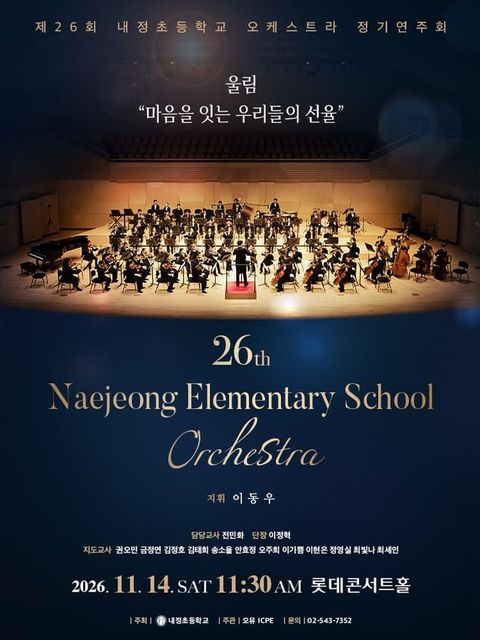
제26회 내정초등학교 오케스트라 정기연주회
롯데콘서트홀
(새 창)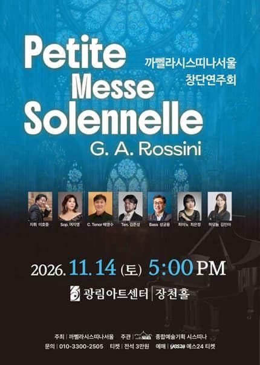
까뻴라시스띠나서울 창단연주회
광림아트센터 장천홀
(새 창)음악/콘서트2026 코리아 반도네온 페스티벌
세종문화회관 세종체임버홀
(새 창)음악/콘서트명가의 초대, 사랑과 평화 소극장 콘서트
엠팟홀(삼익문화재단)
(새 창)[고양] 인형극 <구름이와 율>
이앤아이 아트홀
(새 창)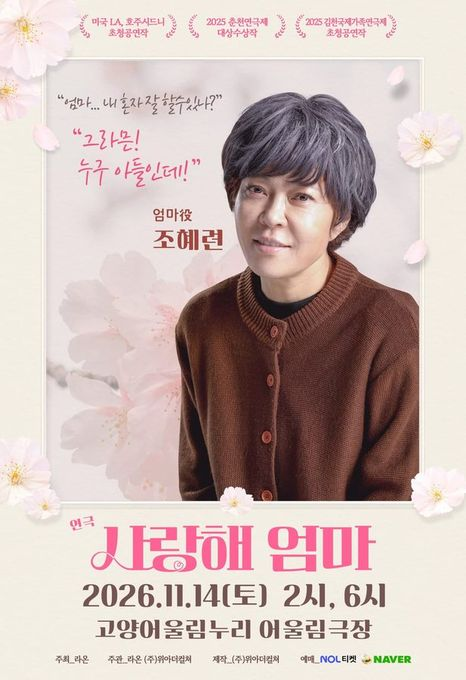
[고양] 사랑해 엄마
고양어울림누리 어울림극장
(새 창)연극[인천] 내일은 내일에게
인천문화예술회관 소공연장
(새 창)
라 필하모니카 첫 내한공연
광주시문화예술의전당 남한산성홀
(새 창)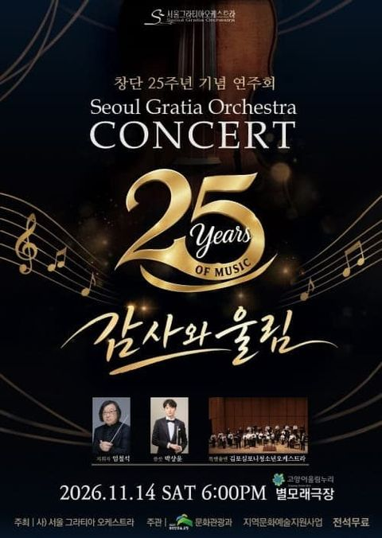
창단 25주년그라티아오케스트라 정기 연주회
고양어울림누리 별모래극장
(새 창)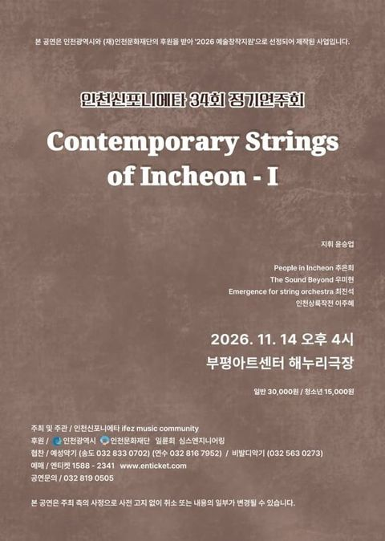
제34회 인천신포니에타 정기연주회: Contemporary Strings of Incheon - Ⅰ
부평아트센터 해누리극장
(새 창)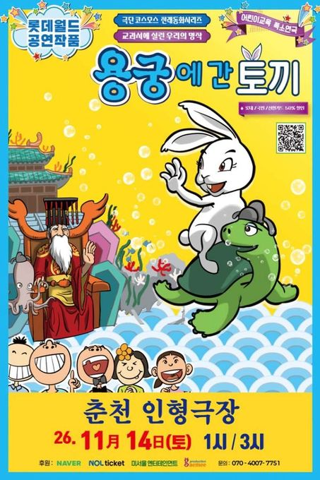
[춘천] 용궁에 간 토끼
춘천인형극장 춘천인형극장
(새 창)
[양양] 토끼로 사는 아홉가지 어려움
양양문화복지회관 공연장
(새 창)뮤지컬/오페라[원주] 뮤지컬 최고다 호기심딱지 시즌4 <피사총사: 우리 몸은 우리가 지킨다!>
원주백운아트홀
(새 창)행사/축제2026 제5회 몽돌소리길 걷기행사
설악해변 백사장
(새 창)
[춘천] 살아있는 박물관 속 고인돌
춘천인형극장
(새 창)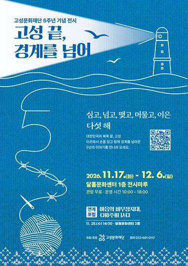
고성문화재단 5주년 기념 전시 <고성 끝, 경계를 넘어>
달홀영화관
(새 창)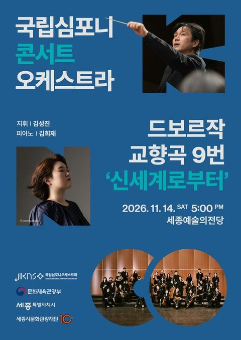
[세종] 국립심포니콘서트오케스트라 <드보르자크, 교향곡 9번 '신세계로부터'>
세종예술의전당
(새 창)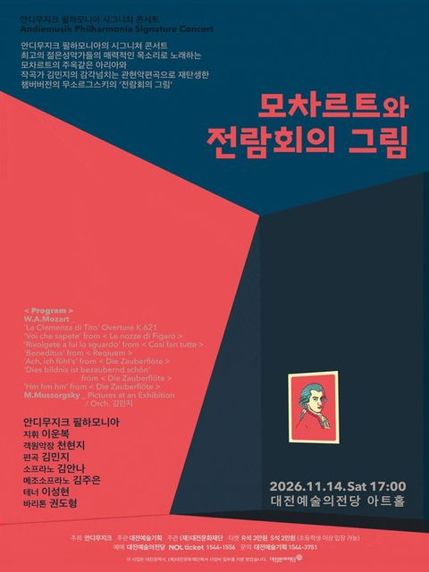
[대전] 안디무지크 필하모니아 시그니쳐 콘서트: 모차르트와 전람회의 그림
대전예술의전당 아트홀
(새 창)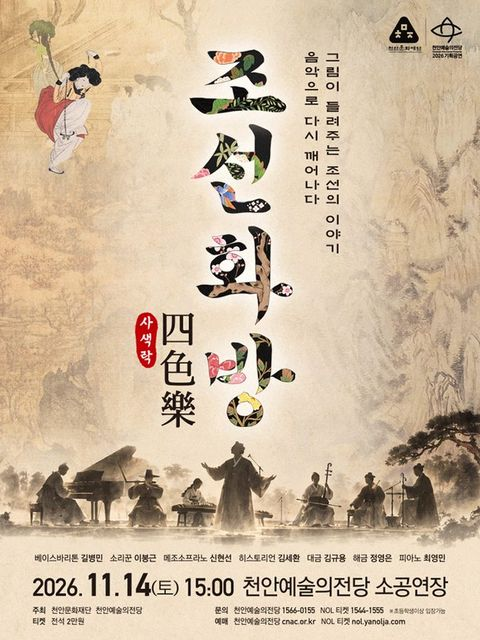
[천안] 2026 천안예술의전당 <조선화방 四色의 樂>
천안예술의전당 소공연장
(새 창)
국립심포니콘서트오케스트라 <드보르자크, 교향곡 9번 '신세계로부터'>
세종예술의전당
(새 창)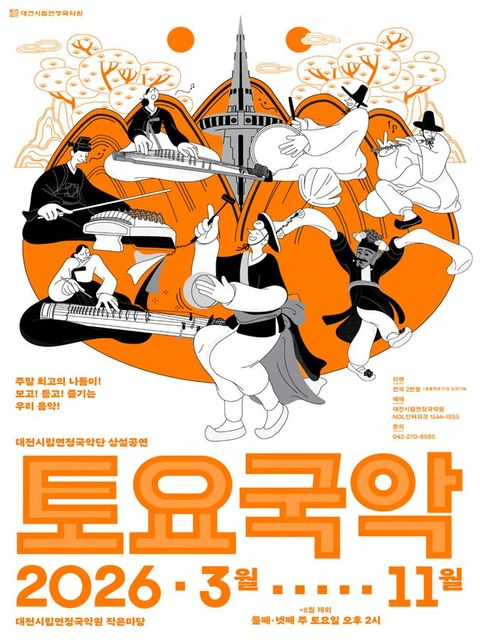
대전시립연정국악단, 토요국악 (11.14)
대전시립연정국악원 작은마당
(새 창)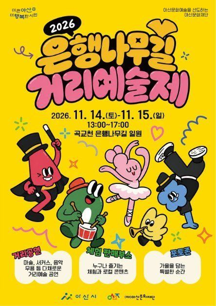
2026 은행나무길 거리예술제 〈아트 스트리트：Art Street〉
충청남도 아산시 염치읍 은행나무길 293
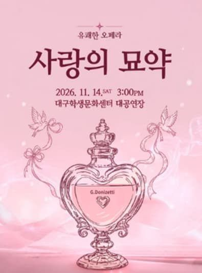
[대구] 유쾌한 오페라, 사랑의 묘약
대구학생문화센터 대공연장
(새 창)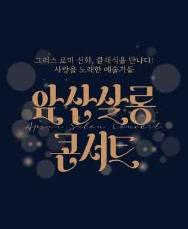
[대구] 앞산살롱콘서트: 그리스 로마 신화, 클래식을 만나다
대덕문화전당
(새 창)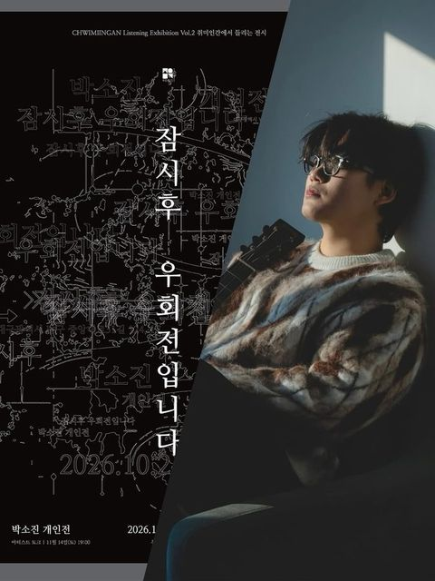
취미인간에서 들리는 전시 프로젝트 Vol. 2 박소진 개인전 <잠시 후 우회전입니다.> 특별 공연&아티스트 토크
취미인간
(새 창)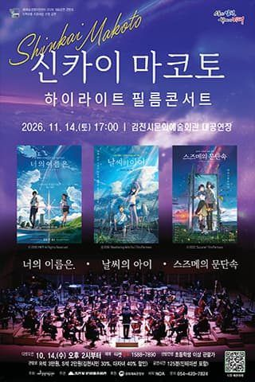
[김천] 신카이 마코토 하이라이트 필름콘서트
김천시문화예술회관 대공연장
(새 창)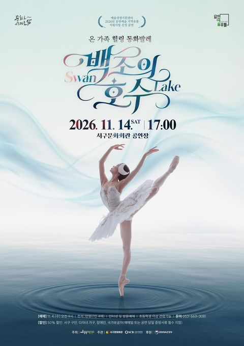
[대구] 백조의 호수
대구서구문화회관 공연장
(새 창)뮤지컬/오페라DSAC 지역예술 협력 프로그램 뮤지컬, 붕어빵
웃는얼굴아트센터 청룡홀
(새 창)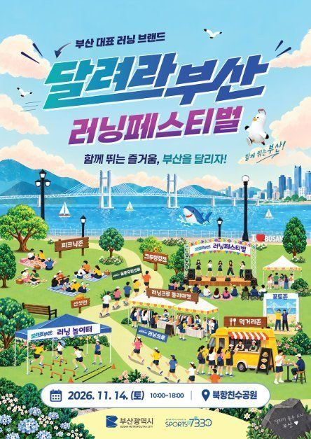
달려라부산 러닝페스티벌
부산광역시 동구 이순신대로 164
[밀양] 노인의 꿈
밀양아리랑아트센터 대공연장
(새 창)음악/콘서트[부산] 할로! Hallo 슈베르트!
성원아트홀
(새 창)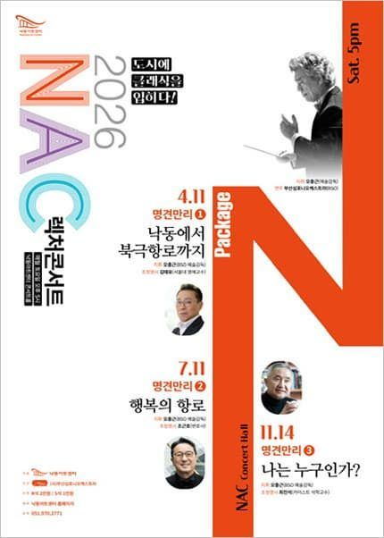
NAC 렉처콘서트, 명견만리3. 나는 누구인가?
낙동아트센터
(새 창)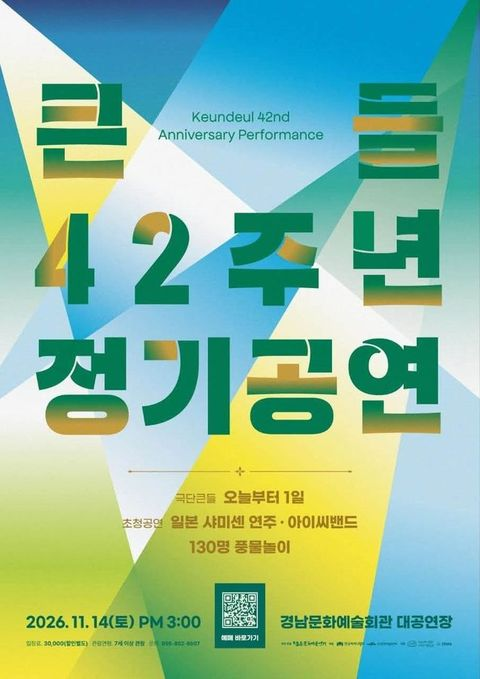
[진주] 2026 큰들 42주년 정기공연
경상남도문화예술회관 대공연장
(새 창)음악/콘서트[부산] 푸른 눈의 휴머니스트, 위트컴 장군
부산콘서트홀
(새 창)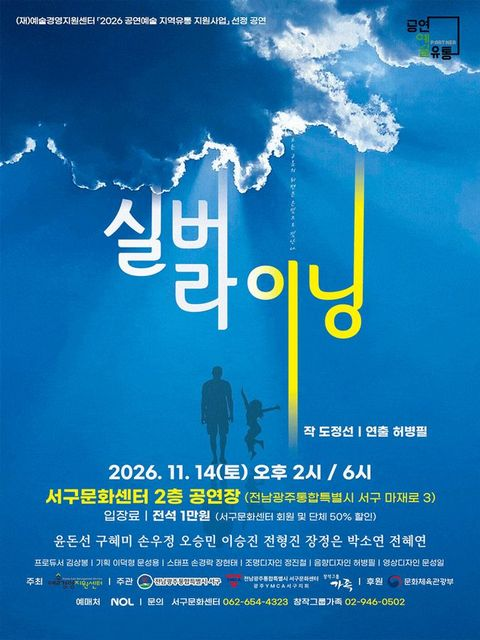
[광주] 실버 라이닝
서구문화센터
(새 창)
[나주] 사형수 김대중
나주문화예술회관
(새 창)
2026 국립남도국악원 토요상설 토요상설: 국악이 좋다, 국립남도국악원 국악연주단 <국악의 향연>
국립남도국악원 진악당
(새 창)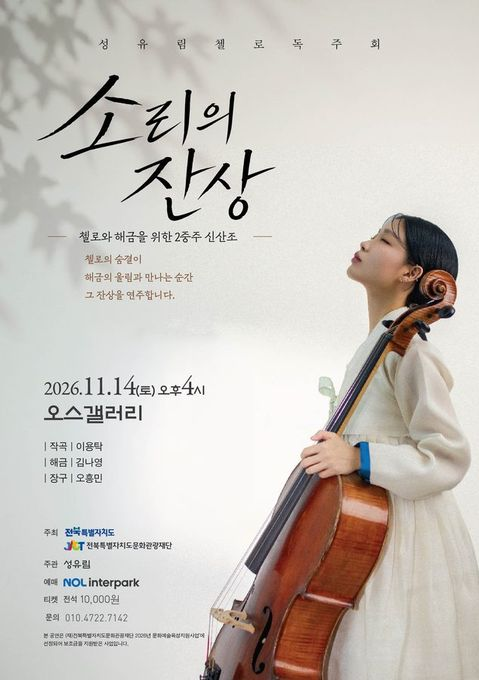
성유림 첼로 독주회 <소리의 잔상>
오스갤러리
(새 창)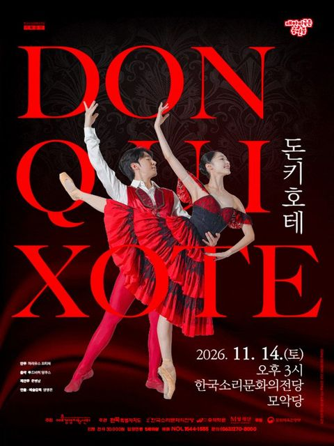
[전주] 발레 <돈키호테>
한국소리문화의전당 모악당
(새 창)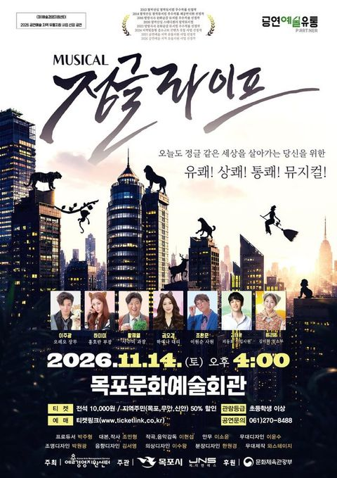
[목포] 정글라이프
목포문화예술회관
(새 창)
제주특별자치도립 서귀포관악단 2026 11월 토요힐링콘서트
서귀포예술의전당 소극장
(새 창)
[제주 서귀포] 오퍼커션앙상블: 제주, 타악의 울림
김정문화회관
(새 창)
제주특별자치도립 서귀포관악단 2026 청소년·대학생 협주곡의 밤
서귀포예술의전당 대극장
(새 창)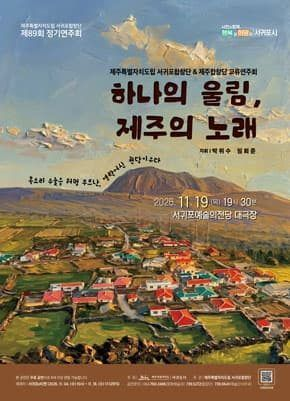
제주특별자치도립 서귀포합창단 제89회 정기연주회
서귀포예술의전당 대극장
(새 창)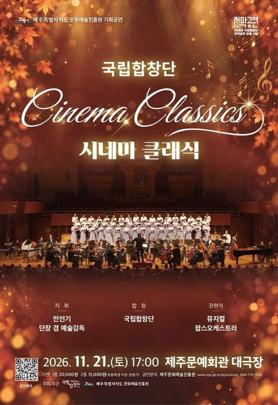
[제주] 국립합창단, 시네마 클래식
제주특별자치도문예회관
(새 창)
2026 제5회 제주비엔날레 허끄곡 모닥치곡 이야홍 : 변용의 기술
제주특별자치도 제주시 1100로 2894-78

동성 간 성관계에 징역 25년, 런던 법원이 막았다
카리브해 섬나라 트리니다드토바고에서 합의한 동성 성인끼리의 성관계까지 처벌하던 조항을, 이 나라 최종 법원인 영국 추밀원이 트리니다드토바고 헌법에 어긋난다고 판단했어요. 정부는 헌법의 두 보호 장치를 내세웠고, 추밀원은 둘 다 받아들이지 않았어요. 남은 건 조문을 어떻게 고칠지예요.

대서양 횡단하던 초고속 여객선, 물고기 집 된다
미국 플로리다주 오칼루사 카운티가 대서양 횡단 기록을 여전히 가진 여객선을 앞바다에 가라앉혀 인공 어초로 만들기 시작했어요. 배를 바다에 넣기 전 무엇을 걷어내야 하는지 정한 연방 지침은 권고일 뿐이고, 칠해진 도료는 대체로 남겨도 돼요. 반대 쪽이 문제 삼는 건 그 도료예요.

탈퇴 버튼, 몇 번 눌러야 나와요?
공정위가 탈퇴 버튼을 둘째 화면보다 깊이 두면 법 위반 예시로 보는 지침 개정안을 행정예고했어요. 1년 전엔 '권고'에 그쳤던 내용이에요. 아직 확정은 아니에요.

에볼라 서약서 안 쓰면 미국 못 간다
한국 시간 11월 4일 오후부터 외국에서 미국으로 가는 비행기를 타는 사람은 모두 최근 21일 동안 콩고민주공화국에 없었다고 서약해야 해요. 미국은 이보다 앞선 5월부터 세 나라에 머문 외국인의 입국을 막아 왔는데, 이 명령은 11월 10일 기한이 지난 뒤 새 명령이 아직 공개되지 않았어요. 세계보건기구는 여행 제한을 권하지 않아요.

"70 쓸거야" 5초 만에 맞춘 국고채 금리 3.70%
공정위가 국고채전문딜러 15곳에 담합 사건 역대 최대 과징금을 매겼어요. 딜러들은 입찰 직전 전화와 메신저로 금리를 맞췄어요. 실적 인정 같은 딜러 제도가 입찰을 어떻게 움직였는지, 유럽은 비슷한 사건을 어떻게 끝냈는지 따라가 봤어요.

AI가 혼자 정부 사이트를 뚫었다, 죄는 누구에게?
호주 정부가 11월 10일 오픈AI 에이전트의 메디케어 통계 포털 무단 접속을 조사한 검토 보고서의 권고 18개를 모두 받아들였어요. AI 모델이 피해를 냈는데 회사가 합리적인 예방 조치를 하지 않았다면 회사를 처벌하는 조항을 검토하고, AI 안전 규제기관을 새로 두자는 제안도 내놓기로 했어요.

미국 10월 물가, 연간 상승률 없이 나왔다… 1년 전 셧다운이 남긴 빈칸
미국 노동통계국이 11월 10일 10월 소비자물가를 발표했어요. 한 달 상승률은 0.4%였지만, 1년 전과 비교한 상승률은 휘발유 등 세 항목 말고는 내지 않았어요. 2025년 10월에는 정부 셧다운으로 가격 조사가 없었기 때문이에요.

업비트와 네이버페이가 한 지붕 아래 들어가면… 공정위가 아직 없는 '원화 코인' 시장까지 들여다본 이유
업비트와 네이버페이는 하는 일이 다른데, 공정위는 두 회사가 합치면 경쟁이 줄 수 있다고 봤어요. 아직 생기지도 않은 '원화 코인' 시장까지 따져 봤어요. 그래도 결합을 막자는 게 아니라, 조건을 붙이자는 의견이에요.

미국과 유럽은 멈췄는데 영국만 금리를 올렸다… 의사록에 적힌 세 가지 이유
영국 중앙은행이 11월 5일 기준금리를 4%로 올렸어요. 미국과 유로존은 한 주 전 금리를 묶었어요. 영란은행이 든 이유와 영국 가계에 언제 닿는지 따라가 봤어요.

공정위 "배민과 쿠팡이 '다른 앱에선 더 싸게' 막았다"… 유럽은 10년 전 호텔 앱에서 같은 싸움을 했다
공정위가 두 배달앱에 잠정 과징금 6,319억 원을 매겼어요. 같은 조항을 먼저 금지한 유럽에서는 금지 뒤 무엇이 달라졌는지 살펴봤어요.

남아공 지방의회 셋 중 둘은 과반 정당이 없다... 연정 규칙 법은 선거에 못 맞췄다
만델라의 당 ANC의 지방선거 득표율이 약 31%로 떨어졌어요. 이제 120곳 넘는 의회가 연정 협상을 해야 하는데, 정부가 만든 연정 규칙은 아직 국회에 묶여 있어요.

정규시즌 1위는 한국시리즈에서 거의 지지 않는다... 그런데 올해는 달랐다
35시즌 중 1위 팀이 진 건 다섯 번이에요. 삼성이 여섯 번째 예외를 만들었어요.

고혈압과 당뇨 관리, 19곳에서 전국 모든 연령으로 차례로 넓힌다
노인 환자가 받던 진료비와 약값 지원은 걷기 등을 하면 주는 포인트로 바뀌어요. 현장에서는 치료가 끊길 수 있다는 걱정이 나와요.

독과점 회사가 해외보다 한국에서 비싸게 받으면 제재 가능, 공정위 25년 만에 규정 손질 나서
독과점 회사가 그럴 만한 이유 없이 한국에서만 값을 높게 받으면 '가격 남용'으로 볼 수 있게 돼요.

헝가리, 공산 시절 비밀경찰 밀고자 약 6만 명 이름을 공개했다
공산 체제가 무너진 지 37년 만이에요. 이제 누구나 이름을 검색할 수 있어요.
자료: 기상청 · MET Norway · 에어코리아 · 한국은행 · 통계청 · 미 에너지정보청 · 한국수출입은행 · 뉴욕 연방준비은행 · 미 노동통계국 · 미 재무부 · 미 경제분석국 · 미 연방준비제도 · 한국관광공사